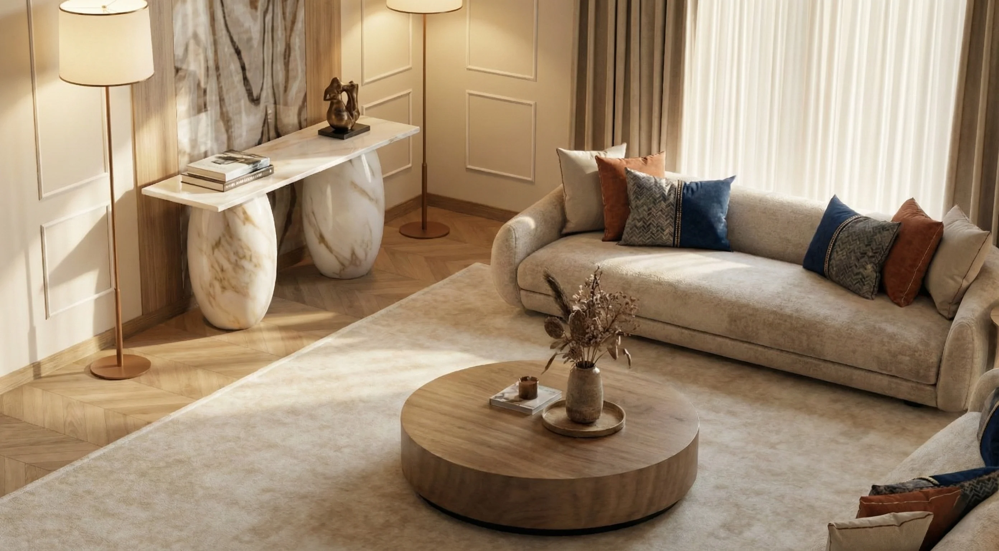
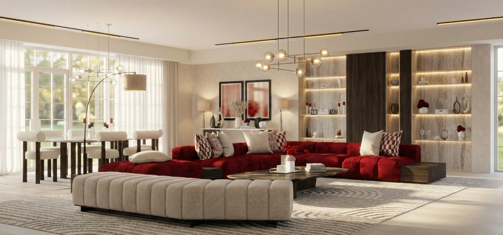
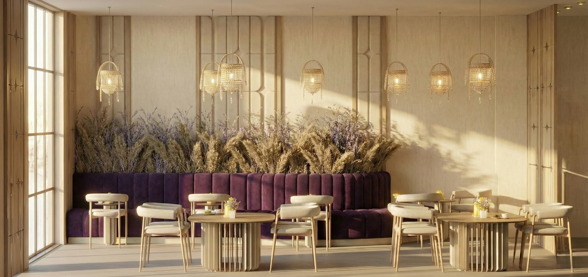

Technical Opinion
Sustainable Materials in Arid Climates
Why traditional stone and modern composites are redefining sustainability in the Gulf region.
I am a passionate, detail-oriented interior designer based in Saudi Arabia , with experience spanning every stage of the design process—from selecting high-quality materials and furniture to creating bespoke, functional spaces tailored to each client’s vision. Influenced by a family legacy in the furniture industry, I bring a strong understanding of both the aesthetic and technical aspects of design. Known for my collaborative approach, I listen carefully to client needs and translate them into refined, practical interiors. Committed to quality, precision, and continuous growth, I thrive in dynamic environments and consistently deliver thoughtful, well-executed design solutions.

Woody Touch | Riyadh
I was responsible for managing the Interior Design Department within the company, overseeing the development of design concepts, selecting appropriate materials, and planning and distributing lighting in accordance with project requirements and quality standards.
Dantelle For Gifts
Dantelle is one of the first and largest gift shops in Yemen. I contributed to establishing the brand initially as an online platform and later its physical retail presence. I designed the complete interior of the store and, as Art Director, led creative direction, oversaw product development, and managed a multidisciplinary team to ensure cohesive, high-quality outcomes aligned with the brand vision.
Al-Huwaidi Trading & Import
Worked in interior design and furniture selection, with a focus on décor planning and client coordination
Abu Alrejal Tading Company
Led the interior design of a corporate oce, focusing on workspace functionality and brand-aligned aesthetics
Lebanese International University (LIU)
Exploring the intersection of technical engineering and artistic expression in interior design. A redirection to my full thoughts and project journey.
Why traditional stone and modern composites are redefining sustainability in the Gulf region.
A day-by-day breakdown of the structural challenges faced in the showroom project.
How natural light manipulation affects the perceived space in luxury apartments.
A curated collection of my finest works. Explore still photography and immersive concepts.




This design vision transforms the cafe into a symphony of royal tones and architectural grace, where Neo-Classical Modern Luxury merges the structural grandeur of classical arches with sleek, high-end finishes. Anchored by a prestigious contrast of deep midnight navy and luminous champagne gold, the space evolves as a sophisticated social sanctuary—featuring velvet banquettes, Carrara marble, and sculptural lighting that includes organic branch-like chandeliers and warm linear cove lights. Every element, from the monolithic service bar with its floating illumination to the botanical wallpapers nestled within geometric arches, serves a refined dialogue between regal modernity and intimate comfort, crafting an atmosphere where authority and warmth exist in perfect harmony.